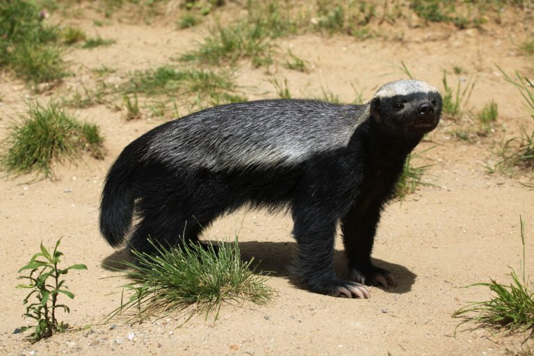
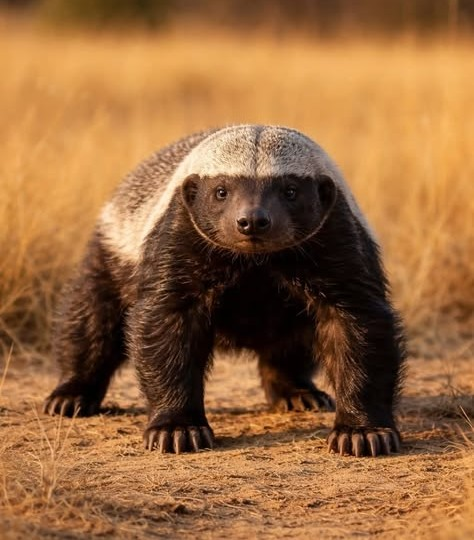

O texugo-do-mel é um dos animais mais famosos da natureza pela sua coragem. Mesmo sendo pequeno, ele não costuma fugir de briga e enfrenta animais muito maiores do que ele.
O texugo-do-mel, cujo nome científico é Mellivora capensis, é um mamífero da família dos mustelídeos, a mesma das lontras e dos furões. É nativo da África e de partes da Ásia, vivendo em savanas, florestas e até regiões semiáridas. Também é conhecido pelo nome popular de ratel.
O nome do gênero, Mellivora, significa "comedor de mel", porque o mel e as larvas de abelha estão entre seus alimentos preferidos. Mas a dieta dele vai muito além disso: o texugo-do-mel é onívoro e come roedores, répteis, anfíbios, aves, ovos, insetos e até carcaças de animais mortos.
É um animal de grande valentia, frequentemente citado como um dos mais destemidos do planeta. Segundo o site InfoEscola, ele é capaz de enfrentar predadores de grande porte,
podendo enfrentar leões, leopardos e cães-selvagens-africanos de igual para igual
Atualmente, o texugo-do-mel é classificado como pouco preocupante quanto ao risco de extinção, já que é encontrado em uma área muito grande do planeta. Por ter hábitos solitários e muitas vezes noturnos, porém, é um animal difícil de ser observado na natureza.


https://www.infoescola.com/animais/texugo
https://www.mammaldiversity.org/taxon/1005860